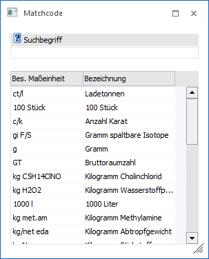

Je nachdem, aus welcher Applikation dieser Matchcode aufgerufen wird, steht eine unterschiedliche Suchmöglichkeit bzw. Anzeige zur Verfügung.

WinLine FAKT - Batchnummer
Wird der Matchcode in der Fakturierung im Bereich der Batchnummern aufgerufen, so kann nach allen bereits angelegten Batchnummern gesucht werden. Diese werden z.B. durch den Batchbeleg oder durch eine Lagerumbuchung erzeugt.
Ø Suchbegriff
Im Feld "Suchbegriff" kann nach der Batchnummer bzw. einem Teil davon gesucht werden. Die Suche selber wird durch Bestätigung des Suchbegriffs ausgelöst oder mit Hilfe des Buttons "Anzeigen" bzw. der Taste F5.
Ø Suchergebnis
In der Tabelle werden die gefundenen Batches mit ihrer Bezeichnung angezeigt. In der zweiten Spalte wird das Erstellungsdatum des Batches wiedergegeben. Durch einen Doppelklick auf den Eintrag wird der ausgewählte Batch in das Ausgangsfenster übernommen.
Hinweis
Batchnummern, die durch den Batchbeleg erzeugt wurden, werden erst dann gelöscht, wenn keine Belege mehr vorhanden sind, die diesen Batch hinterlegt haben. Die Batchnummern für die Lagerumbuchung werden bis zum Jahresabschluss beibehalten.
WinLine FAKT - Fokus bei der Neueingabe
Wird der Matchcode in der Fakturierung im Bereich der Belegoptionen (Register "DrillDown / Fokus" - Eingabefeld "Fokus bei der Neueingabe") aufgerufen, so kann nach allen Spalten der Belegerfassung gesucht werden.
Ø Suchbegriff
Im Feld "Suchbegriff" kann nach der Spaltennummer und der Bezeichnung bzw. einem Teil davon gesucht werden. Die Suche selber wird durch Bestätigung des Suchbegriffs ausgelöst oder mit Hilfe des Buttons "Anzeigen" bzw. der Taste F5.
Ø Suchergebnis
In der Tabelle werden die gefundenen Spalten mit ihrer Nummer und Bezeichnung dargestellt. Zusätzlich wird ein Hinweis angezeigt, falls die Spalte nur in bestimmten Programmen bzw. Konstellationen vorkommt. Durch einen Doppelklick auf den Eintrag wird die Spalte in das Ausgangsfenster übernommen.
WinLine FAKT - Rabattleiste
Wird der Matchcode in der Fakturierung im Bereich der Rabattleiste aufgerufen, so kann nach allen bereits angelegten Rabattleisten gesucht werden. Diese werden im Programm "Rabattleiste" (WinLine FAKT - Stammdaten - Preisstammdaten - Rabattleiste) erzeugt.
Ø Suchbegriff
Im Feld "Suchbegriff" kann nach der Leistennummer bzw. einem Teil davon gesucht werden. Die Suche selber wird durch Bestätigung des Suchbegriffs ausgelöst oder mit Hilfe des Buttons "Anzeigen" bzw. der Taste F5.
Ø Suchergebnis
In der Tabelle werden die gefundenen Rabattleisten mit ihrer Nummer angezeigt. Durch einen Doppelklick auf den Eintrag wird die ausgewählte Leiste in das Ausgangsfenster übernommen.
WinLine FAKT - Vertretervorlagen
Wird der Matchcode in der Fakturierung im Bereich der Vertretervorlagen aufgerufen, so kann nach allen bereits angelegten Vertretervorlagen gesucht werden. Diese werden im Programm "Vertretervorlagen" (WinLine FAKT - Stammdaten - Vertreterstammdaten - Vertretervorlagen) erzeugt.
Ø Suchbegriff
Im Feld "Suchbegriff" kann nach dem Namen der Vertretervorlage bzw. einem Teil davon gesucht werden. Die Suche selber wird durch Bestätigung des Suchbegriffs ausgelöst oder mit Hilfe des Buttons "Anzeigen" bzw. der Taste F5.
Ø Suchergebnis
In der Tabelle werden die gefundenen Vertretervorlagen mit ihrem Namen angezeigt. Durch einen Doppelklick auf den Eintrag wird die ausgewählte Vorlage in das Ausgangsfenster übernommen.
WinLine FAKT - Verpackungsnummer
Wird der Matchcode in der Fakturierung im Bereich der Verpackungsnummer aufgerufen, so kann nach allen bereits angelegten Verpackungsnummern gesucht werden. Diese werden z.B. durch die Erzeugung von Rechnungsbelegen erzeugt.
Ø Suchbegriff
Im Feld "Suchbegriff" kann nach der Verpackungsnummer bzw. einem Teil davon gesucht werden. Die Suche selber wird durch Bestätigung des Suchbegriffs ausgelöst oder mit Hilfe des Buttons "Anzeigen" bzw. der Taste F5.
Ø Suchergebnis
In der Tabelle werden die gefundenen Verpackungsnummern mit ihrer Bezeichnung angezeigt. In der zweiten Spalte wird das Erstellungsdatum der Nummer wiedergegeben. Durch einen Doppelklick auf den Eintrag wird die ausgewählte Verpackungsnummer in das Ausgangsfenster übernommen.
WinLine FAKT - Besondere Maßeinheit (KN8)
Wird der Matchcode in der Spalte "Bes. Maßeinheit" des Programms "KN8 Warenkatalog" aufgerufen, so kann nach allen besonderen Maßeinheiten (gemäß der Statistik Austria) gesucht werden.
Ø Suchbegriff
Im Feld "Suchbegriff" kann nach der Besonderen Maßeinheit und deren Bezeichnung bzw. einem Teil davon gesucht werden. Die Suche selber wird durch Bestätigung des Suchbegriffs ausgelöst oder mit Hilfe des Buttons "Anzeigen" bzw. der Taste F5.
Ø Suchergebnis
In der Tabelle werden die gefundenen Maßeinheiten mit ihrer Bezeichnung angezeigt. Durch einen Doppelklick auf den Eintrag wird die ausgewählte Maßeinheit in das Ausgangsfenster übernommen.
WinLine PPS - Stapelnummer
Wird der Matchcode in der Produktion im Bereich der Stapelnummern aufgerufen, so kann nach allen bereits angelegten Stapelnummern gesucht werden. Diese Stapelnummern können z.B. über die Menüpunkte "Produktionsvorbereitung" oder "Produktionsstatus" erzeugt werden.
Ø Suchbegriff
Im Feld "Suchbegriff" kann nach der Stapelnummer bzw. einem Teil davon gesucht werden. Die Suche selber wird durch Bestätigung des Suchbegriffs ausgelöst oder mit Hilfe des Buttons "Anzeigen" bzw. der Taste F5.
Ø Suchergebnis
In der Tabelle werden die gefundenen Stapelnummern angezeigt. Durch einen Doppelklick auf den Eintrag wird die ausgewählte Nummer in das Ausgangsfenster übernommen.
WinLine PPS - Poolnummer
Wird der Matchcode in der Produktion im Bereich der Poolnummern aufgerufen, so kann nach allen Poolnummern des Produktionsauftrags gesucht werden. Diese Poolnummern werden von der WinLine automatisch erzeugt, wenn im Stücklistenstamm die Option "Ausprägungspool aktiviert wurde.
Ø Suchbegriff
Im Feld "Suchbegriff" kann nach der Poolnummer bzw. einem Teil davon gesucht werden. Die Suche selber wird durch Bestätigung des Suchbegriffs ausgelöst oder mit Hilfe des Buttons "Anzeigen" bzw. der Taste F5.
Ø Suchergebnis
In der Tabelle werden die gefundenen Poolnummern angezeigt. Durch einen Doppelklick auf den Eintrag wird die ausgewählte Nummer in das Ausgangsfenster übernommen.
Buttons
Ø Anzeigen
Durch Anwahl des Buttons "Anzeigen" bzw. der Taste F5 wird die Suche gestartet.
Hinweis
Durch Bestätigung der Eingabe im Feld "Suchbegriff" wird die Suche ebenfalls gestartet.
Ø Ende
Durch Anwahl des Buttons "Ende" bzw. der Taste ESC wird der Programmbereich geschlossen.